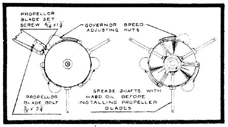
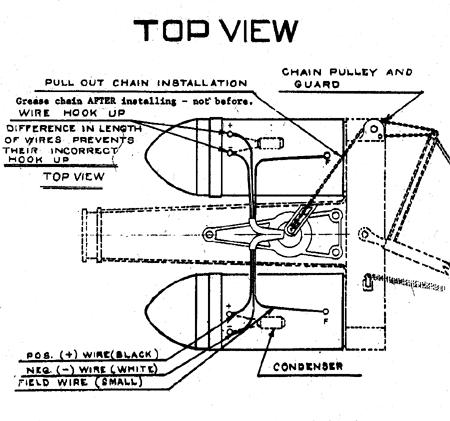
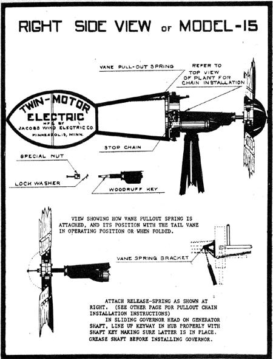

In MOTHER NOS. 24 and 30, I wrote some articles about my experiences with wind generators. The first ("The Answer Blowin' in the Wind") dealt with the old Jacobs and Wincharger generators, which were common on farms and homesteads before the advent of the Rural Electrification program. The second ("Wind Generator Notes") described my experiences with the M-1222-H Wincharger the only such wind generator still in regular production in the United States. Since the publication of those two pieces, I've received a considerable volume of mail from folks wanting more information on wind power so here's my response to those letters, and to the sincere interest many people have shown in the wind as an energy source.
A great many of you have asked where you might be able to locate an old Jacobs or some other "leftover" machine. Well, let me bring you up to date:
In 1973, when the first article was written, there were still a few used wind generators to be discovered by anyone who had a vehicle, enough gasoline, and a sufficient amount of perseverance. Today-perhaps partly because of my writings in MOTHER NO. 24 what were once rare "finds" are now all but extinct. I've heard there are actual crews who do nothing but drive the backroods of the Great Plains states, buying and later reselling all the old machines they can find. Consequently, the prices of those "veterans" have skyrocketed. I know of one individual who paid $5,000 for a rebuilt Jacobs!
I don't mean to say, of course, that all the old wind generators have been bought up certainly there must be some still stashed away in the more remote sections of the country. There are a lot fewer than there used to be, though, and the odds against turning one up are getting higher every day. For those who still think they'd like to give the search a try, the best advice I can give is to check with the Rural Electrification Administration to learn which regions in the country were the last to be hooked up to "modern" electricity. Such areas should be good places to investigate for used machines.
For those of us who don't live out on the Plains, today's conditions the current cost of gasoline in particular, and everything else in general make an extended "hunt" a pretty expensive proposition. New wind generators in the higher wattage ranges cost an arm and a leg, and the relatively inexpensive low-output units (such as the M-1222-H Wincharger) aren't really practical for much more than a few 25-watt light bulbs and maybe an automotive-type stereo. Most folks unless they don't mind an electrically Spartan existence-want more power than a 200-watt windplant can provide. As long as we're on the depressing news (let's get it all over with at once!), it should be emphasized that no one short of Howard Hughes or the Shah of Iran can afford a system that will produce all the power most Americans are accustomed to enjoying at the flick of a switch. Hardly a week goes by that I don't receive a letter from somebody who wants to hook up his all-electric home to a wind generator. To understand why this idea is unrealistic, we must remember that most of the old systems of R.E.A. days were rated in the 1,500-2,500 watt range. In an area with an average windspeed of 10 mph, a 2,000-watt unit will produce about one hundred kilowatt hours of current a month.
Since the average American household uses about three hundred kilowatt hours per month, we can quickly see that we must either learn to get along on one-third our average consumption, or lay out over $7,000 for a new Elektro SW-50 model capable of producing the power we've come to think we "need". That price tag, by the way, was current in the summer of 1973 so you can bet it's higher now. But you can still buy an awful lot of Reddy Kilowatt's own polluted juice for seven grand!
So with the used windplant market all but dried up and new systems mainly limited to the wealthy-the only choice left for someone determined t6 harness the wind as a source of electricity is the construction of his own machine from scratch.
In the past couple of years, there've been several different designs for and concepts of the fabrication of a home-built wind driven generator. Some of these schemes aren't worth the time and money called for, but many have promise for folks with some basic tools and the skill to use them. I'm particularly partial to a design I wrote about in Chapter II of Producing Your Own Power (Rodale Press, 1974, available in hard cover from MOTHER'S Bookshelf for $8.95). This do-it-yourself system is based on the very rare Jacobs Model 15, which was a 1,500-watt flywheel-driven unit that sported two 750-watt generators. (See the accompanying diagrams taken from Jacobs' M-15 owner's manual-for the basic idea.)
In my version, surplus high-wattage aircraft generators are utilized to bring potential power output to as high as 4,800 watts or more! Design your props right, and you could come close to getting 300 kwh a month in an area with an average windspeed of 10 mph! In one stroke, two of the major drawbacks of most home-built windplants are eliminated:
[1] low wattage, and
[2] complicated gearing to attain the high rpm's required by generators not specifically designed for wind power. within the prop and governing mechanism (which i simplified in my plan as best I could for ease of construction). The problem is caused by the air-brake governor, which-in machines with props larger than six feet-puts a fair amount of stress on the unit at high rpm's. (The governor can't be totally impractical, however, because the Wincharger Corporation used to manufacture them in this size 1 know, because I own one!) Anyone with some ingenuity and access to a machine shop should be able to improve the device without much difficulty.
Another source of hope and encouragement for folks yearning to be energy self-sufficient is the recent proliferation of new ideas in the field in fact, the days of the horizontal axis windplant may soon be past. The May 1375 edition of Popular Science magazine features a 5-kilowatt, vertical-axis wind generator now being tested by Sandia Laboratories in Albuquerque, New Mexico. The design has many advantages over the more traditional "windmill" type: Most notable are the easier and less expensive construction of the blades (usually the most complicated part of a do-it-yourself unit), no need for a tail vane (because the generator accepts wind from any direction), and the fact that the machine can be mounted at ground level (which means a lot if you're not the tower-climbing type!). With growing interest in wind power as a source of electricity, I expect that models of this design will eventually be on the market at prices most of us can afford.
Offhand, I can think of only three drawbacks to a vertical axis wind generator of this sort:
[1] The device could pose a serious safety hazard, similar to the dangers presented by trying to live with a revved-up helicopter in your backyard. Anyone--small children in particular, and even livestock-who encountered the whirling blades (which are not that easy to see when they're moving rapidly) would almost certainly be tower, so it can't take advantage of the more powerful [2]currents above ground level. While such a generator could be mounted on the roof of a house, the resulting vibration and noise would soon drive the building's inhabitants batty. And
[3], the aesthetics of the gizmo leave something to be, desired it's a pretty weird-looking contraption to haw., whirring away on the ole homestead. We're used to seeing "windmills" on the farm, not giant eggbeaters!
None of these objections, however, have anything to do with the device's performance as a producer of electricity if what I hear about the vertical-axis design is true, it sound like an inexpensive and efficient unit.
Whether you buy a used Jacobs or Wincharger, a new Dunlite or Elektro, construct your own from surplus aircraft or automotive components, or wait around for someone to manufacture a newly designed high wattage generator at reasonable price, the most important bit of information I ca, offer is: Before you devote a lot of time, energy, and money to any wind electric system, be sure you gather accurate data on the average winds in your area. I didn't and I'm suffer in the consequences.
If you have a less-than-10-mph windspeed, I'd advise you to think of other ways to get your electricity. I eventually determined that the breezes in our area blow somewhere between 8 and 10 mph which really isn't enough provide continuous power to our storage batteries during periods of low (or no) wind. Don't let your enthusiasm for as: alternative power source blind you to the realities of nature', laws. The old saw is true, and it really hits learn it firsthand: There ain't no free lunch!
|
 Diagram of a wind generator |
 Top view of a wind generator |
 Right side view of a wind generator. |